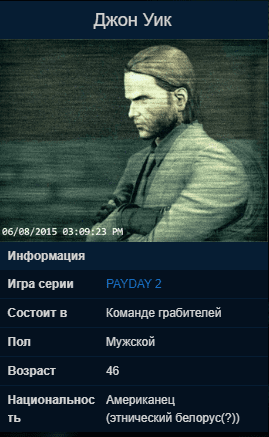

Джон Уик
Джон Уик - бывший наёмный убийца. В вечно хорошей физической форме. Наверное, это как-то связано с его боксерским прошлым. Чейнс знает его с тех пор, как они вместе служили в армии.
Спустя долгое время, он перестал скрываться и помог Чейнсу в одном личном вопросе. В качестве награды за услугу, он попросил место в банде PAYDAY. Разве мог Чейнс отказать старому знакомому?
Описание

Бывший наемный убийца, ранее связанный с нью-йоркским русским мафиози Вигго Тарасовым и старый друг Чейнса. Попал в команду после того, как помог Чейнсу отбиться от полицейских в Швеции.
Судя по всему, он вёл дела с командой ещё до того как присоединился к ней, поскольку во время Спасения Хокстона, последний может сказать, что он давно его не видел и спросить, как поживает семья Джона. Также это можно рассматривать как отсылку к фильму "Джон Уик".
После роспуска банды PAYDAY Джон сосредоточился на том, что он делает лучше всего, будучи одним из самых известных киллеров в истории. В конце концов он вышел на пенсию, женился и даже завел собаку. Тем не менее, вскоре прошлая жизнь напомнила о себе, но его враги скоро узнают, что не нужно трогать чертову собаку (повествование событий фильмов "Джон Уик" и "Джон Уик 2") (секретная, хорошая концовка).
Личное дело в файлах ФБР
Бывший наёмный убийца, ранее связанный с боссом русской мафии Нью-Йорка Вигго Тарасовым. Подозреваемый в участии в массовых убийствах русских мафиози на Восточном побережье. Понял, что после резни в ночном клубе «Красный круг» он замарался, но по неизвестным причинам вернулся в преступную жизнь.
Уик оказался высокоэффективным экспертом по оружию. Однако его присутствие в банде PAYDAY озадачивает наших аналитиков. У Уика есть грозная репутация наёмного убийцы. Вот почему он участвует в вооруженных грабежах. Хотя, несомненно, его уникальные навыки полезны Crime.Net, остаётся вопросы - зачем Бэйну нужен наёмный убийца?
Снаряжение
Вместе с персонажем в игру были добавлены:
- Набор перков Киллер.
- Огнестрельное оружие - пистолет Chimano Compact.
- Оружие ближнего боя - Нож URSA Tanto.